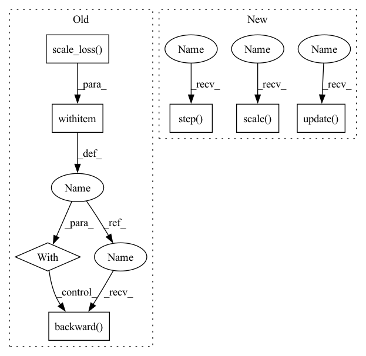

Pattern ID :32808

Before Change
if is_mixed_precision:
// 2/3 & 3/3 of mixed precision training with amp
with amp.scale_loss(loss, optimizer) as scaled_loss:
scaled_loss.backward()
else:
loss.backward()
optimizer.step()
lr_scheduler.step()
After Change
loss, stats = criterion(outputs, labels)
if is_mixed_precision:
accelerator.backward(scaler.scale(loss))
scaler.step(optimizer)
scaler.update()
else:
accelerator.backward(loss)
optimizer.step()
In pattern: SUPERPATTERN
Frequency: 3
Non-data size: 7
Instances
Fragment ID: 95172684
Project Name: voldemortx/dst-cbc
Commit Name: 6011a78ca028c58259d0181a11905e1d258ff7b9
Time: 2021-06-06
Author: zyfeng97@outlook.com
File Name: segmentation/main.py
M Class Name: AnonimousClass
N Class Name: AnonimousClass
M Method Name: train(19)
N Method Name: train(19)
M Parent Class:
N Parent Class:
M File Name: segmentation/main.py
N File Name: segmentation/main.py
M Start Line: 205
M End Line: 220
N Start Line: 173
N End Line: 227
'>
Before Change
loss = metrics["loss"]
if self.config.use_amp:
with amp.scale_loss(loss, optimizer) as scaled_loss:
scaled_loss.backward()
else:
loss.backward()
optimizer.step()
After Change
loss = metrics["loss"]
if self.config.use_amp:
scaler.scale(loss).backward()
scaler.step(optimizer)
scaler.update()
else:
loss.backward()
optimizer.step()
scheduler.step()
'>
Fragment ID: 95172685
Project Name: affjljoo3581/gpt2
Commit Name: 00ea99de92d8e8a849cf41c78317b074479d0569
Time: 2020-09-08
Author: affjljoo3581@gmail.com
File Name: src/gpt2/training/training.py
M Class Name: Trainer
N Class Name: Trainer
M Method Name: _train_step(7)
N Method Name: _train_step(6)
M Parent Class: object
N Parent Class: object
M File Name: src/gpt2/training/training.py
N File Name: src/gpt2/training/training.py
M Start Line: 166
M End Line: 175
N Start Line: 154
N End Line: 171
'>
Before Change
logits = _flatten_preds(logits, label_mask)
loss = loss_func(logits, label)
if use_amp:
with amp.scale_loss(loss, opt) as scaled_loss:
scaled_loss.backward()
else:
loss.backward()
opt.step()
After Change
loss.backward()
opt.step()
else:
grad_scaler.scale(loss).backward()
grad_scaler.step(opt)
grad_scaler.update()
_, preds = logits.max(1)
loss = loss.item()
'>
Fragment ID: 95172683
Project Name: hqucms/weaver
Commit Name: 4e35ae025b17dbc4f0c5dcc1bce0b5df16a3fe25
Time: 2020-09-02
Author: huilin.qu@cern.ch
File Name: utils/nn/tools.py
M Class Name: AnonimousClass
N Class Name: AnonimousClass
M Method Name: train(7)
N Method Name: train(7)
M Parent Class:
N Parent Class:
M File Name: utils/nn/tools.py
N File Name: utils/nn/tools.py
M Start Line: 37
M End Line: 66
N Start Line: 57
N End Line: 64